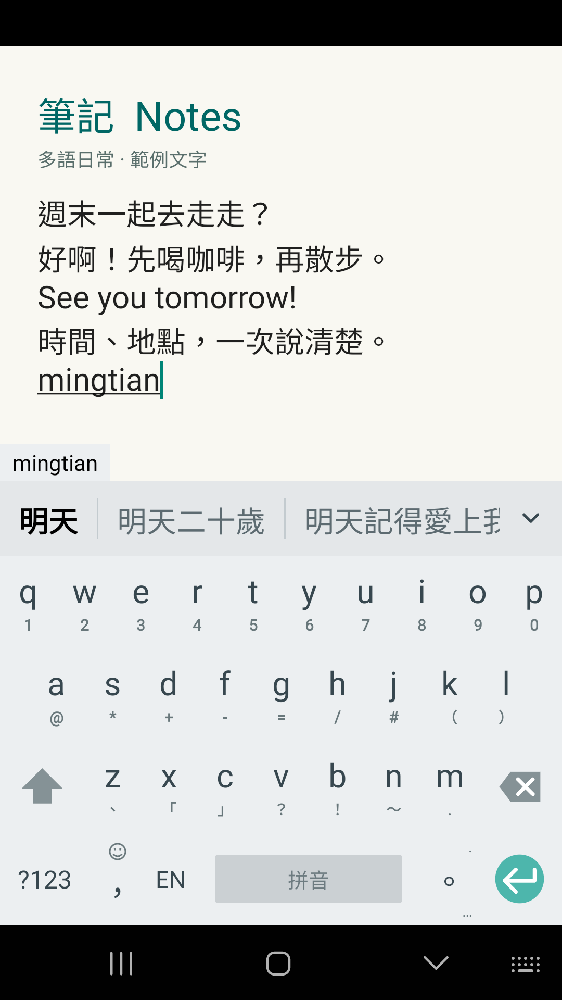
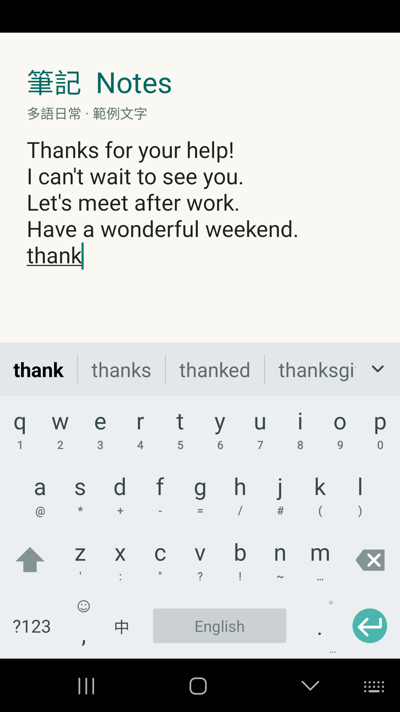
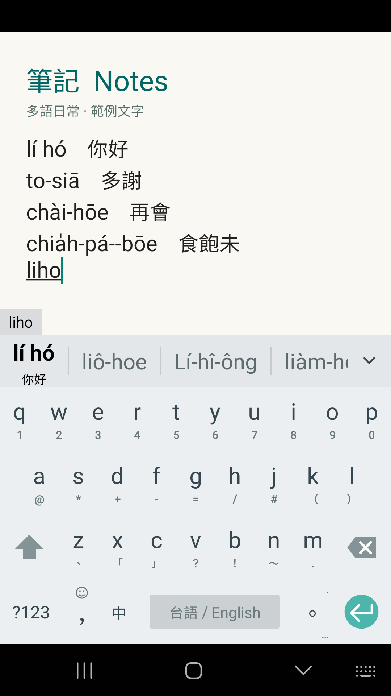
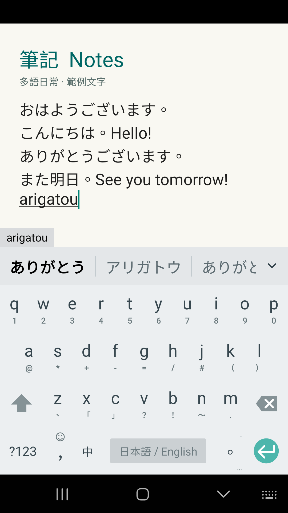
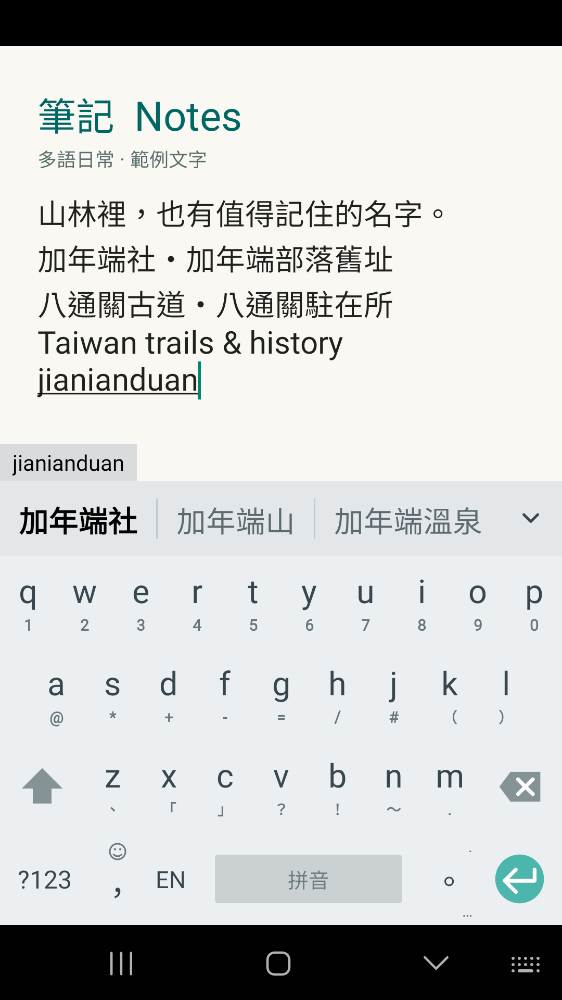
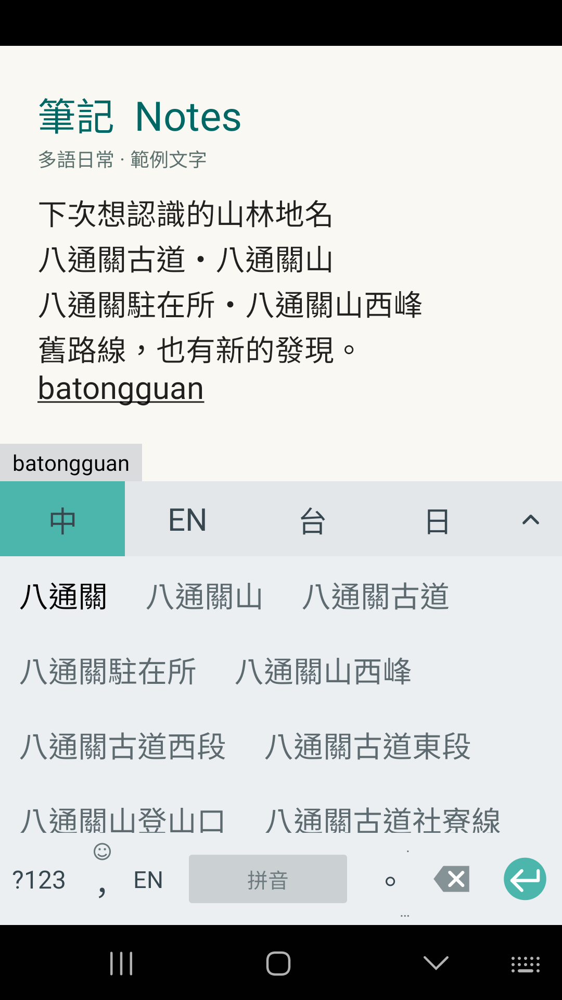
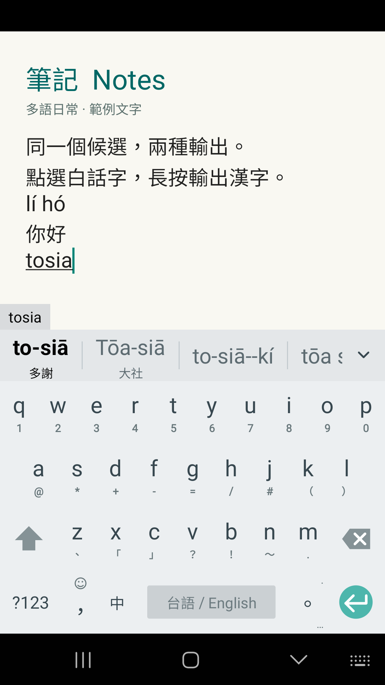
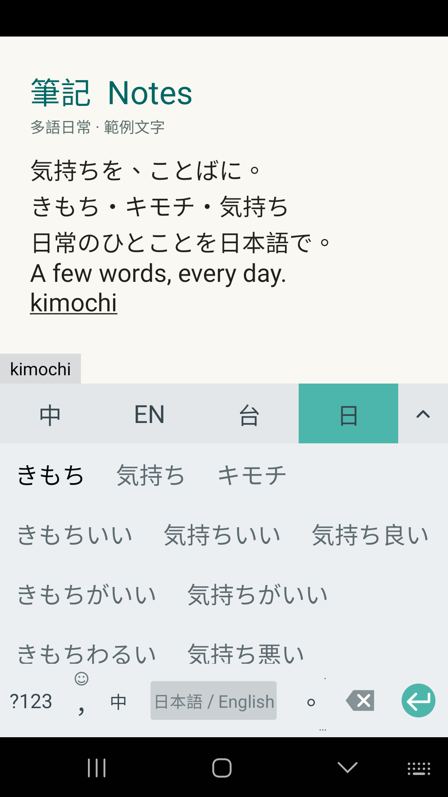

中文、英文，自然接話
週末邀約與英文回覆；mingtian 的實際中文候選。

把日常寫成英文
感謝、邀約與週末祝福；英文模式的 thank 補全候選。

台語白話字，也看得懂
你好、多謝、再會、食飽未；lí hó 搭配漢字提示。

日本語，從日常開始
早安、午安、謝謝與明天見；arigatou 的日語候選。

記住山林裡的名字
保留 jianianduan 原始示範，查看加年端社等 Rudy 地名。

一段古道，更多地名
展開 batongguan 候選，認識八通關周邊地名。

同一個候選，兩種輸出
點選輸出 lí hó，長按輸出你好；再輸入 tosia 查看多謝。

漢字、平假名、片假名
展開 kimochi 日語候選，查看實際可選的寫法。